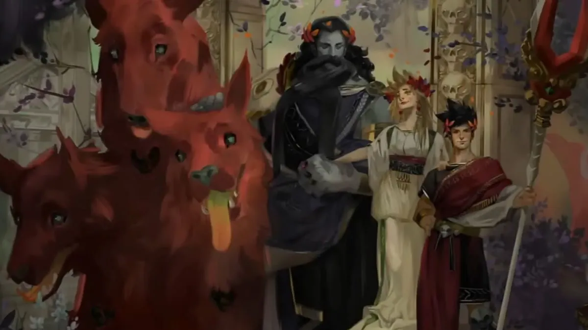

Home

Zagreus is the immortal Prince of the Underworld, son of Hades, the God of the Dead, and Nyx, Night Incarnate. As he grew up, his father worked to ensure he would be fit to rule the Underworld as his heir. In order to correct Zagreus’ assumed laziness, Hades enrolled him in martial combat lessons under Achilles, which he immediately showed great promise in. Throughout Hades’ Palace, Zagreus consistently heard rumours of his heritage, and was unable to coax an answer out of his father, when asking. To combat this, Zagreus asked Hypnos, Sleep Incarnate, to cast a spell over the entirety of the house. This opportunity was then used to sneak into Hades’ office, where he found a goodbye letter from Persephone, Goddess of Verdure. At this point, Zagreus battles through the many layers of the Underworld, including his own father Hades, in order to find his birth mother, Persephone.

Along the way, the gods of Mount Olympus catch wind of his efforts, and inform Nyx of their intention to aid him by granting their boons to him. Upon reaching Persephone, she is delighted to learn of his existence, as she had initially thought he had passed away in childbirth, which is the reason she had left the underworld in the first place. However, before the two were able to reconnect, Zagreus dies due to his Underworld-born nature, and his continued exposure to the mortal world. Upon returning to the House, Hades refuses to acknowledge his son’s pleas, refusing his requests to travel to the surface unimpeded. So, Zagreus must battle his way through the entire Underworld and through his father again to reach his real mother again in Greece, at which point she is able to explain more to her son.
Once Hades and Persephone had met, they quickly fell in love and bore a child, Zagreus. However, because Hades wasn’t originally a denizen of the Underworld, the fates declared that he would never have an heir, hence Zagreus’ stillborn birth, causing such a heartbreak in Persephone that she fled to the surface. However, Nyx generously pours magic into him, and manages to defy fate, bringing him back to life. On top of his miraculous revival, she also uses her magic to conceal Persephone’s surface abode from the Olympic gods, and the rest of the Underworld. While Persephone and Hades agree that it should be kept this way, Zagreus disagrees, and wishes for his mother to rejoin their family in the Underworld, as well as bringing the Olympic gods into the loop of things. Pitching the idea to Persephone, she doubts that Hades still loves her, and refuses to return to the Underworld because of this. Zagreus then dies to the surface again before he is able to convince her further.
Once back in the palace, Zagreus was able to sneak into his father’s bedchamber, where he finds a portrait of Persephone on Hades’ bedside table. He eagerly rushes back to the surface to inform his mother, who eventually agrees to give it a shot. Charon, the Stygian Boatman, then provides a lovely ride from the surface back into the Underworld to Zagreus and Persephone, who are greeted at the palace by Hades, with a soulful apology, which is quickly accepted. The family agrees that they should work to repair the damage between them and their Olympian relatives, and Hades suggests that Zagreus continues to “escape” the underworld, in order to maintain the guise of business being maintained as usual, meanwhile fortifying security within the Underworld’s biomes. In order to repair the relationship between the Underworld and Olympus, Zagreus is tasked with building positive relations with the Olympic gods, gifting Nectar and Ambrosia, and completing numerous tasks for them. During this, he personally invites each and every god to a feast that is to be thrown in the Underworld, at which Persephone and Hades explain themselves to the rest of their family. At the end of the feast, Zeus, King of the Olympians, and Hades shake hands, and the family is able to live freely and openly in the Underworld forevermore.